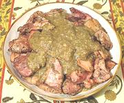

|
Chicken with AlmondsImperial Roman - Pullum Numidicum | ||||
| Makes: Effort: Sched: DoAhead: |
4 main *** 1-1/4 hr Yes |
Stunningly delicious and intensely flavorful, this Roman curry will give you a whole new perspective on cooking and dining during the Empire. | |||
|
|
2 1 1/8 ------- 1/3 1/2 1/2 1-1/2 1/2 2 2-1/2 1/8 2 1 1 1/2 1 ------- ar 1 2 ar |
# t t --- t t T oz t T oz t t t c t t --- t T |
Chicken meat (1) Peppercorns Asafoetida (2) -- Sauce Peppercorns Cumin seed (10) Coriander seed Almonds, raw Rue, fresh (3) Lovage, fresh (4) Figs, dried (5) Laser root (6) Wine Vinegar Honey Chicken Stock Salt Olive Oil ----------------- Oil for frying (7) Potato Starch (8) Water Pepper |
I have adhered to the original recipe to the extent feasible - well, almost - see the notes below. PREP
|